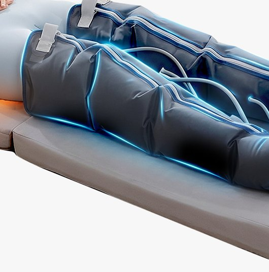
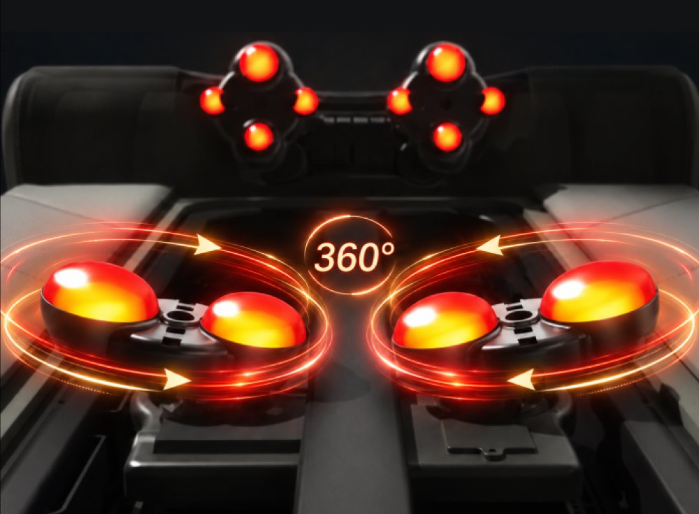
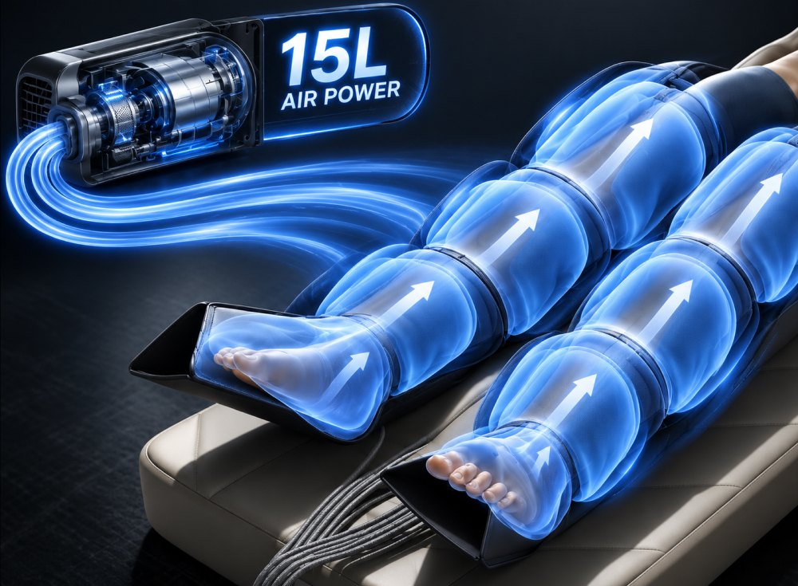
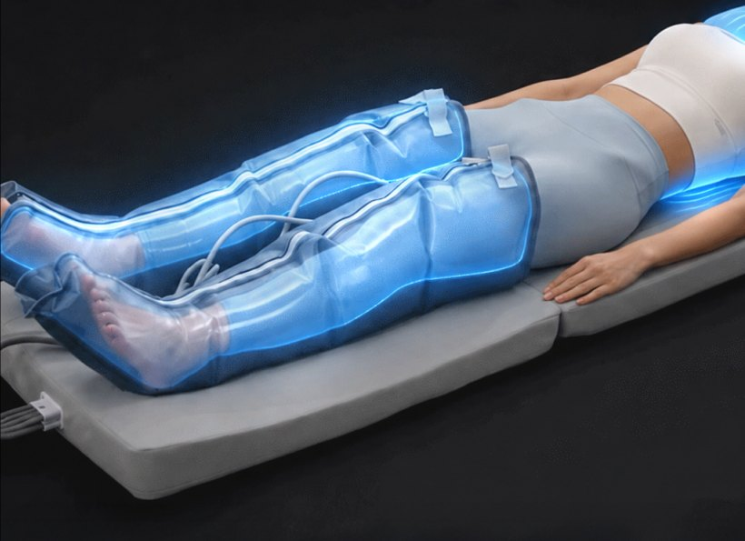
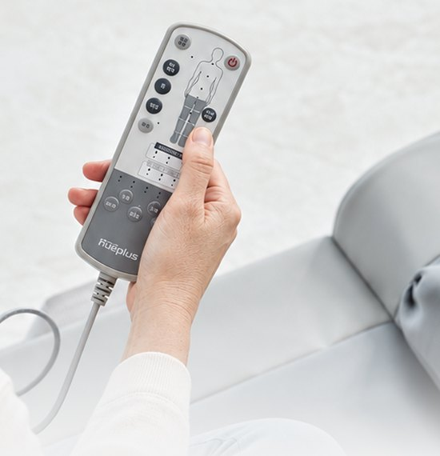

Huplus KIMPRO-25 Review: Overview
This Huplus KIMPRO-25 review looks at a Korean full-body massage mat that combines heated rotating massage balls for the back with air-compression leg cuffs, sold in Korea by the official Huplus store on Naver. The 2026 listing calls it the "NEW Premium Kimpro" massage bed; the model itself (KIMPRO-25) first launched in January 2023.
The idea is simple: a massage chair is expensive and takes up a corner of the room, while a mat can be unfolded on the floor or a bed and folded away afterwards. We checked the Korean product notice, retailer spec sheets and the brand's product images to see what you actually get and who it fits.
"A massage-chair style routine for your back and legs that folds to the size of a suitcase."

How It Works: Massage Balls Above, Air Cuffs Below
- Upper body: pairs of 3D rotating massage balls move along the neck, shoulder, back and waist zone. The brand's images show them spinning through 360 degrees, with an amber heat function.
- Legs: two detachable air-compression cuffs wrap each leg from thigh to foot. The brand advertises a 15-litre air pump that inflates the chambers in sequence for a squeezing massage.
- Integrated pillow: the neck pillow is built into the mat, and a cushioning pad sits on top.
- Wired remote: one button starts an automatic programme; the remote has a body diagram and separate leg-mode buttons.


Daily Use: Modes, Heat, Timer and Storage
You lie down on the unfolded mat, zip or strap the cuffs on, and pick one of five automatic modes. Retail listings describe energy, circulation, relax, upper-body and lower-body programmes, plus three leg-compression patterns. Each session ends automatically after 15 minutes, a sensible limit that also stops you falling asleep with it running.
Afterwards the mat folds in half to about 100 × 54 cm and 14 cm thick, with a carry handle, so it can stand in a wardrobe or slide under a bed. At just over 8 kg it is manageable for one adult, though older users may want help carrying it upstairs.


Key Specs
| Spec | Huplus KIMPRO-25 |
|---|---|
| Type | Folding full-body massage mat (안마매트 / massage bed) |
| Massage methods | Rotating massage balls, air compression, kneading |
| Heat | Yes, massage-ball heat (seller states up to ~36.5°C) |
| Auto modes | 5 (plus leg-compression settings) |
| Timer | 15-minute auto shut-off |
| Size unfolded | 54 × 177 × 7 cm |
| Size folded | 54 × 100 × 14 cm |
| Weight | 8.11 kg mat; 9.3 kg with components |
| Power | DC 12 V via adapter, 36 W (product notice) |
| Control | Wired remote |
| In the box | Mat with neck pillow, cushioning pad, adapter, 2 leg cuffs |
| Manufacturer | Happyroom Co., Ltd. (Korea); made in China (OEM) |
| Warranty | 1 year free A/S in Korea |
| Korean price | 440,100 KRW on the official Huplus Naver store at time of writing |
Specifications come from the Korean product information notice (상품정보제공고시) and retailer spec sheets for KIMPRO-25; they were not lab-measured by us. Some retailers list a 12.6 V / 25.2 W adapter instead, so check the label on your unit.
How It Compares
| Huplus KIMPRO-25 mat | Full massage chair | Leg-only air massager | |
|---|---|---|---|
| Coverage | Neck, back, waist + legs | Whole body | Legs only |
| Footprint | Folds to 100 × 54 cm | Permanent corner of a room | Small, portable |
| Weight | About 8–9 kg | 60–100+ kg | 1–3 kg |
| Typical Korean price | About 440,000 KRW | 1.5–5 million KRW | 100,000–300,000 KRW |
| Best for | Small homes, floor or bed use | Daily heavy use, deep massage | Swollen legs after standing |
Pros & Cons
| Pros | Cons |
|---|---|
| Back massage balls and leg compression in one product | Not a medical device; no clinical claims verified |
| Folds in half with a handle for storage | Leg cuffs list minimum circumference sizes, so very slim or very large legs may not fit well |
| Heat function and 15-minute auto-off | Korean 220 V adapter; check voltage before using abroad |
| Far cheaper and lighter than a massage chair | Lying on the floor is harder for people with mobility issues |
Who It Suits (and Who Should Skip It)
- Yes: Office workers and people who stand all day and want a back-and-legs routine at home.
- Yes: Small apartments where a massage chair will not fit.
- Yes: As a gift for parents — the one-button remote is simple to use.
- No: Anyone looking for treatment of a medical condition; see a doctor instead.
- No: People who find getting up from the floor difficult, unless the mat is used on a bed.
Huplus KIMPRO-25 FAQ
What is the Huplus KIMPRO-25?
It is a folding, full-body massage mat (sold in Korea as a massage bed, 안마매트) by Huplus, a brand of Korean company Happyroom Co., Ltd. The upper section has heated rotating massage balls for the neck, back and waist, and two detachable air-compression cuffs cover the legs from thigh to foot. It is controlled with a wired remote.
How big and heavy is it?
According to the Korean product notice, it measures about 54 × 177 × 7 cm unfolded and 54 × 100 × 14 cm folded, and weighs 8.11 kg for the mat alone or 9.3 kg with all components. Leave a floor space a little larger than a single yoga mat.
How many modes does it have and how long is a session?
Retail listings show five automatic modes (described by sellers as energy, circulation, relax, upper body and lower body), plus separate leg-compression settings. A session switches off automatically after 15 minutes. Sellers state the heated massage balls reach up to about 36.5°C.
Can I use it outside Korea?
The mat runs on DC 12 V via an adapter (the product notice lists 36 W). Korean units ship with a 220 V Korean-plug adapter, so check the adapter label before using it on 110–120 V power in the U.S. The one-year free warranty from Happyroom applies to Korean purchases.
Is it a medical device?
No. It is a consumer massager, and the seller itself says it should not be used for purposes other than massage. If you are pregnant, have a circulation disorder, a pacemaker, recent surgery or any chronic condition, ask your doctor before using air-compression or heated massage products.
Full-Body Massage Mats with Air Compression
The Huplus KIMPRO-25 is sold in Korea via the official Huplus store on Naver. Compare similar heated massage mats with leg air compression on Amazon.